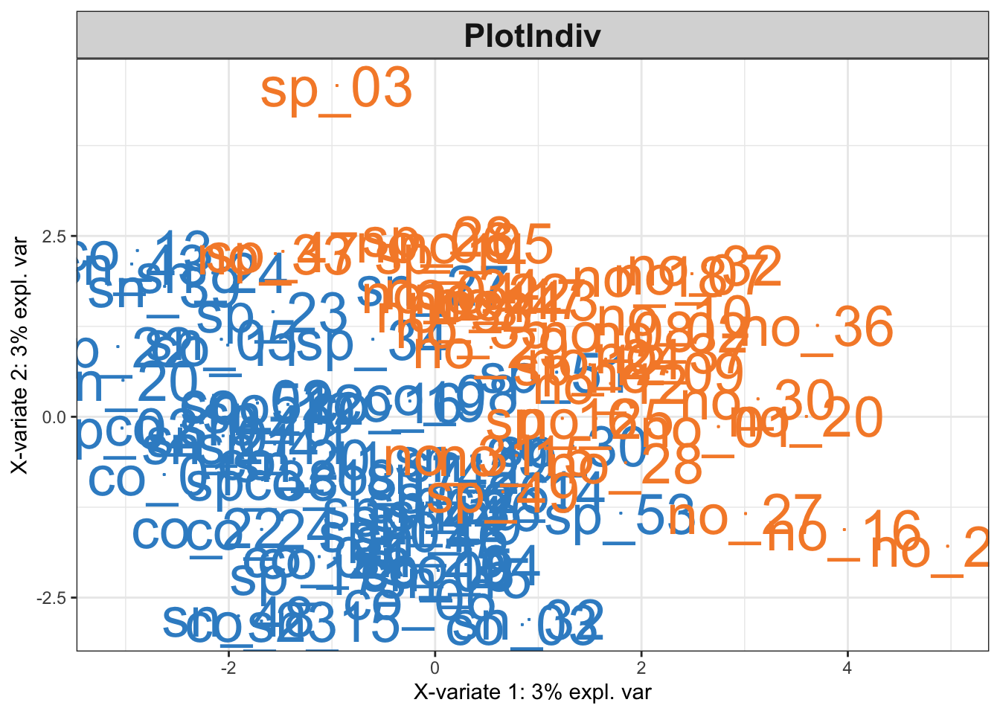
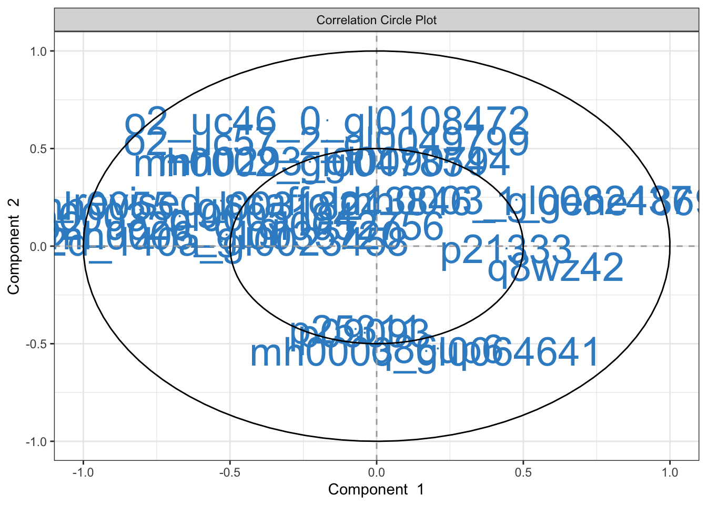
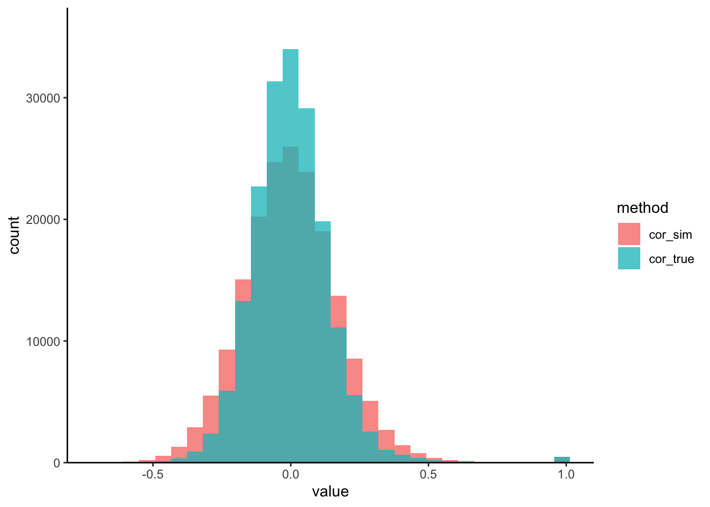
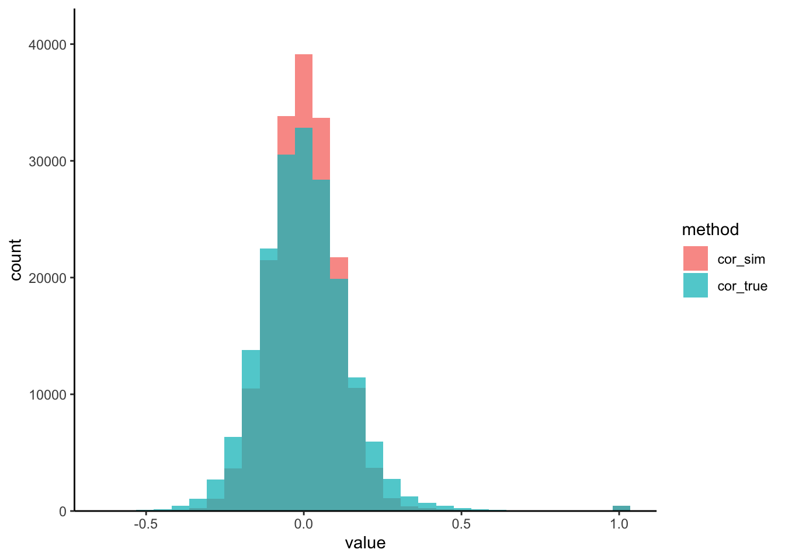
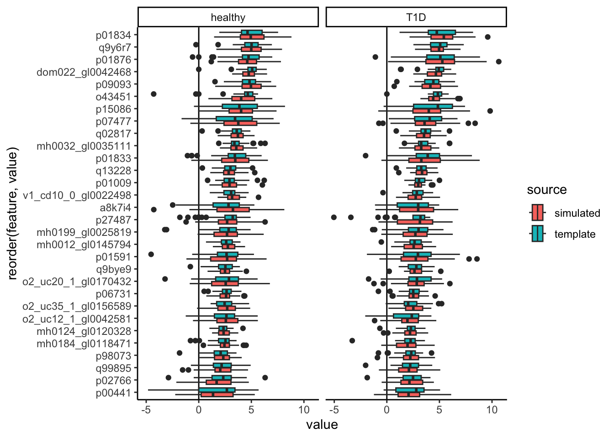

Chapter 3 Multivariate Power Analysis
How can we choose sample sizes in more complex bioinformatic workflows, where we simultaneously analyze many features (taxa, genes, metabolites) in concert? While traditional, analytical power analysis often breaks down, simulation can still be effective. We’ll look at a concrete case study where we try to choose a good sample size for a sparse partial least squares discriminant analysis (sPLS-DA) of the Type I Diabetes (T1D) gut microbiome.
First, we’ll load the required packages. Relative to our first session, the only
additional package that we need is mixOmics. This can be installed using
BiocManager::install('mixOmics').
3.1 Interpreting PLS-DA
The T1D dataset below describes 427 metabolites from the gut microbiomes of 40 T1D patients and 61 healthy controls. These data were originally gathered by Gavin et al. (2018), who were motivated by the relationship between the pancreas and intestinal issues often experienced by T1D patients. They were especially curious about whether microbime-associated proteins might be related to increased risk for T1D development.
The output that we care about are the PLD-DA scores and loadings. The wrapper below directly gives us this output without our having to explicitly set hyerparameters, though you can look here to see how the function was defined.


Exercise: Discuss the output of plotIndiv. How does plotVar shape
your interpretation?
Solution: The first two dimensions of the sPLS-DA pick on distinctions between the T1D (orange) and control (blue) groups. The variance by these first two dimensions is relatively small – variation in protein signatures may not be easiliy captured in two dimensions or may not generally be correlated with the disease response. Since most of the differences between groups are captured by the first dimension, we can look for features that are highly correlated with this dimension to see which proteins might be driving the difference. For example, we can conclude that T1D samples tend to have higher levels of p21333 and q8wz42 compared to the controls.
3.2 Estimation
Let’s estimate a simulator where every protein is allowed ot vary across T1D type. Since the data have already been centered log-ratio transformed, it’s okay to treat these as Gaussian.
3.3 Evaluation
Last time, we saw how we could visualize marginal simulator quality. How can we tell whether a joint simulator is working, though? One simple check is to analyze the pairwise correlations. Since the copula model is designed to capture second-order moments, it should at the very least effectively capture the correlations.
We’ve written a small helper that visualizes the pairwise protein-protein correlations from both the real and the simulated datasets. We seem to be often overestimating the correlation strength. This is likely a consequence of the high-dimensionality of the problem.

Exercise: To address this, let’s try modifying the copula_def argument of
setup_simulator to use a more suitable simulator. Generate new correlation
histograms and comment on the changes you observe. You only need to modify the
commented lines (#) lines in the block below.
simulator <- setup_simulator(
t1d,
link_formula = ~outcome2,
family = ~ GaussianLSS(),
copula_def = # fill this code in
) |>
estimate(mstop = 100)
sim_exper <- sample(simulator) # and then run these two lines
correlation_hist(t1d, sim_exper) #Solution: For our coupla, we can use a covariance estimator of Cai and Liu
(2011), that is
suited for high dimensions. Larger values of thr will increase the stability
of our estimates, but at the cost of potentially missing or weakening true
correlations. In line with this point, our new simulated correlations are more
concentrated.
simulator <- setup_simulator(
t1d,
link_formula = ~outcome2,
family = ~ GaussianLSS(),
copula_def = copula_adaptive(thr = 0.4)
) |>
estimate(mstop = 100)
sim_exper <- sample(simulator)
correlation_hist(t1d, sim_exper) :::

3.4 PLS-DA Power Analysis
Now that we have a simulator, we can run a power analysis. In theory, we could look at how any summary from the PLS-DA output varies as the sample size increases. The most natural one, though, is simply to see how classifier performance improves as we gather more samples. Specifically, we’ll measure the holdout Area Under the Curve (auc), a measure of how well the trains PLS-DA classifier balance precision and recall on new samples.
Moreover, we’ll study the effect of sparsity – what happens when many features
have no relationship at all with the response? We’ll also simulate three
hypothetical datasets for each sample size and sparsity level. All
configurations of interest are stored in the config matrix below.
config <- expand.grid(
sample_size = floor(seq(15, 150, length.out = 5)),
n_rep = 1:3,
n_null = floor(seq(317, 417, length.out = 4)),
metrics = NA
)
data(t1d_order)Exercise: Finally, we’re in a position to generate synthetic data and
evaluate PLS-DA performance. Fill in the block below to update the simulator for
each i. Remember that the original simulator defined above assumes that all
proteins are associated with T1D. You can use t1d_order to prioritize the
proteins with the strongest effects in the original data. As before, you should
only need to modify the line marked with the comments (#).
for (i in seq_len(nrow(config))) {
simulator <- simulator |>
mutate(
# fill this in
) |>
estimate(mstop = 100)
config$metrics[i] <- (sample_n(simulator, config$sample_size[i]) |>
splsda_fit())[["auc"]]
print(glue("run {i}/{nrow(config)}"))
}Solution: To define nulls, we mutate the weakest proteins so that there is no longer any
association with T1D: link = ~ 1 instead of link = ~ outcome2. To speed up
the computation, we organized the mutate calls so that we don’t need to
re-estimate proteins whose effects were removed in a previous iteration.
for (i in seq_len(nrow(config))) {
if (i == 1 || config$n_null[i] != config$n_null[i - 1]) {
simulator <- simulator |>
mutate(any_of(rev(t1d_order)[1:config$n_null[i]]), link = ~1) |>
estimate(mstop = 100)
}
config$metrics[i] <- (sample_n(simulator, config$sample_size[i]) |>
splsda_fit())[["auc"]]
print(glue("run {i}/{nrow(config)}"))
}:::
We can visualize variation in performance.
ggplot(config, aes(sample_size, metrics, col = factor(n_null))) +
geom_point() +
facet_wrap(~n_null)Discussion: Interpret the visualization above. How do you think analysis like this could help you justify making some experimental investments over others?
Solution: Reading across facets from top left to bottom right, power decreases when the number of null proteins increases. It seems that sPLS-DA can benefit from having many weakly associated features. While power is sometimes high in low sample sizes, the variance can be quite large. In all settings, there is a noticeable decrease in variance in power as we go from 15 to 48 samples. If we can assume that a moderate fraction (> 15%) of measured proteins are associated with T1D, then we may already achieve good power with ~ 100 samples. However, if we imagine our effect might be sparser in our future experiment, then this figure would give us good justification for arguing for a larger number of samples, in order to ensure we can discover a disease-associated proteomics signature.
## R version 4.4.0 (2024-04-24)
## Platform: aarch64-apple-darwin20
## Running under: macOS Ventura 13.4
##
## Matrix products: default
## BLAS: /Library/Frameworks/R.framework/Versions/4.4-arm64/Resources/lib/libRblas.0.dylib
## LAPACK: /Library/Frameworks/R.framework/Versions/4.4-arm64/Resources/lib/libRlapack.dylib; LAPACK version 3.12.0
##
## locale:
## [1] en_US.UTF-8/en_US.UTF-8/en_US.UTF-8/C/en_US.UTF-8/en_US.UTF-8
##
## time zone: Australia/Melbourne
## tzcode source: internal
##
## attached base packages:
## [1] splines parallel stats4 stats graphics grDevices utils datasets methods base
##
## other attached packages:
## [1] TreeSummarizedExperiment_2.12.0 Biostrings_2.72.1 XVector_0.44.0 SingleCellExperiment_1.26.0
## [5] scDesigner_0.0.0.9000 MIGsim_0.0.0.9000 tidyr_1.3.1 tibble_3.2.1
## [9] scico_1.5.0 purrr_1.0.2 patchwork_1.2.0 mixOmics_6.28.0
## [13] lattice_0.22-6 MASS_7.3-60.2 glue_1.7.0 ggplot2_3.5.1
## [17] ggdist_3.3.2 gamboostLSS_2.0-7 mboost_2.9-10 stabs_0.6-4
## [21] forcats_1.0.0 dplyr_1.1.4 SummarizedExperiment_1.34.0 Biobase_2.64.0
## [25] GenomicRanges_1.56.0 GenomeInfoDb_1.40.0 IRanges_2.38.0 S4Vectors_0.42.0
## [29] BiocGenerics_0.50.0 MatrixGenerics_1.16.0 matrixStats_1.3.0 SpiecEasi_1.1.3
## [33] CovTools_0.5.4
##
## loaded via a namespace (and not attached):
## [1] libcoin_1.0-10 RColorBrewer_1.1-3 rstudioapi_0.16.0 jsonlite_1.8.8 shape_1.4.6.1
## [6] magrittr_2.0.3 farver_2.1.2 rmarkdown_2.27 fs_1.6.4 zlibbioc_1.50.0
## [11] vctrs_0.6.5 memoise_2.0.1 base64enc_0.1-3 progress_1.2.3 htmltools_0.5.8.1
## [16] S4Arrays_1.4.1 distributional_0.4.0 SparseArray_1.4.8 Formula_1.2-5 sass_0.4.9
## [21] pracma_2.4.4 bslib_0.7.0.9000 htmlwidgets_1.6.4 plyr_1.8.9 copula_1.1-3
## [26] cachem_1.1.0 igraph_2.0.3 lifecycle_1.0.4 minpack.lm_1.2-4 iterators_1.0.14
## [31] pkgconfig_2.0.3 Matrix_1.7-0 R6_2.5.1 fastmap_1.2.0 GenomeInfoDbData_1.2.12
## [36] rbibutils_2.2.16 numDeriv_2016.8-1.1 digest_0.6.35 colorspace_2.1-0 rARPACK_0.11-0
## [41] RSpectra_0.16-1 kde1d_1.0.7 ellipse_0.5.0 labeling_0.4.3 pspline_1.0-20
## [46] fansi_1.0.6 nnls_1.5 httr_1.4.7 abind_1.4-5 compiler_4.4.0
## [51] gsl_2.1-8 withr_3.0.0 doParallel_1.0.17 BiocParallel_1.38.0 highr_0.11
## [56] DelayedArray_0.30.1 corpcor_1.6.10 scatterplot3d_0.3-44 tools_4.4.0 ape_5.8
## [61] quadprog_1.5-8 stabledist_0.7-1 nlme_3.1-164 inum_1.0-5 grid_4.4.0
## [66] reshape2_1.4.4 generics_0.1.3 gtable_0.3.5 flare_1.7.0.1 hms_1.1.3
## [71] huge_1.3.5 utf8_1.2.4 ggrepel_0.9.5 foreach_1.5.2 pillar_1.9.0
## [76] stringr_1.5.1 yulab.utils_0.1.4 limma_3.60.2 partykit_1.2-20 treeio_1.28.0
## [81] survival_3.7-0 tidyselect_1.2.1 ADGofTest_0.3 locfit_1.5-9.9 knitr_1.47
## [86] gridExtra_2.3 bookdown_0.39.1 edgeR_4.2.0 xfun_0.44 expm_0.999-9
## [91] statmod_1.5.0 geigen_2.3 stringi_1.8.4 VGAM_1.1-11 UCSC.utils_1.0.0
## [96] lazyeval_0.2.2 yaml_2.3.8 evaluate_0.23 codetools_0.2-20 SHT_0.1.8
## [101] cli_3.6.2 rpart_4.1.23 Rdpack_2.6 munsell_0.5.1 jquerylib_0.1.4
## [106] pulsar_0.3.11 Rcpp_1.0.12 rngWELL_0.10-9 randtoolbox_2.0.4 assertthat_0.2.1
## [111] rgl_1.3.1 prettyunits_1.2.0 gamlss.dist_6.1-1 glmnet_4.1-8 tidytree_0.4.6
## [116] mvtnorm_1.2-5 scales_1.3.0 pcaPP_2.0-4 insight_0.20.1 crayon_1.5.2
## [121] shapes_1.2.7 rlang_1.1.4 rvinecopulib_0.6.3.1.1